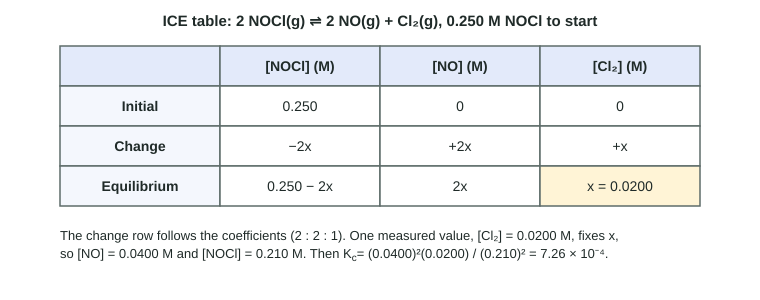

Topic 7.3 showed how to write the expression for K. This page is about getting its value from data. Sometimes you are handed every equilibrium concentration and just substitute. More often you are told how a reaction started and only one equilibrium amount; then an ICE table fills in the rest.
When every equilibrium value is given
Write the expression, substitute the equilibrium concentrations (or partial pressures for Kp), and calculate.
Worked example. At 450 °C, an equilibrium mixture of H2(g) + I2(g) ⇌ 2 HI(g) has [H2] = 0.0114 M, [I2] = 0.00120 M and [HI] = 0.0262 M. Find Kc.
1. Expression: Kc = [HI]2 / ([H2][I2]).
2. Substitute: Kc = (0.0262)2 / (0.0114 × 0.00120) = 6.864 × 10−4 / 1.368 × 10−5 = 50.2.
Repeat with other equilibrium mixtures at 450 °C and you get 50.0 within rounding every time, even though the concentrations are very different. That is what makes K a constant.
K has no units on the exam. Keep the significant figures of the data (here three).
Heterogeneous equilibria
A heterogeneous equilibrium has species in more than one phase, such as a solid and a gas. A homogeneous equilibrium has everything in one phase (all gases, or all dissolved). In a heterogeneous equilibrium, the pure solids and liquids still drop out of K (topic 7.3). So for NH4HS(s) ⇌ NH3(g) + H2S(g), Kc = [NH3][H2S]. If the equilibrium gas concentrations are both 0.0150 M, Kc = (0.0150)(0.0150) = 2.25 × 10−4, whether 2 g or 200 g of solid remain. Adding more solid changes nothing, as long as some solid is present.
When only one equilibrium value is given: the ICE table

An ICE table is a grid with a column for each species (leave out solids and liquids) and three rows:
- Initial: the concentrations at the start.
- Change: how each concentration changes on the way to equilibrium. Write it with one unknown, x, times each species' coefficient: minus for the side that is used up, plus for the side that forms.
- Equilibrium: Initial + Change.
The change row is just stoichiometry (topic 4.5): species change in the ratio of their coefficients. One measured equilibrium value tells you x, and x gives you every other concentration.
Worked example. 0.500 mol NOCl is put into an empty 2.00 L flask: 2 NOCl(g) ⇌ 2 NO(g) + Cl2(g). At equilibrium the flask holds 0.0400 mol Cl2. Find Kc.
1. Convert to molarity: [NOCl]0 = 0.500 mol / 2.00 L = 0.250 M; [Cl2]eq = 0.0400 mol / 2.00 L = 0.0200 M.
2. Direction: only NOCl is present, so the reaction must go forward (Q = 0 < K).
| [NOCl] (M) | [NO] (M) | [Cl2] (M) | |
|---|---|---|---|
| Initial | 0.250 | 0 | 0 |
| Change | −2x | +2x | +x |
| Equilibrium | 0.250 − 2x | 2x | x |
3. Use the measured value: x = [Cl2]eq = 0.0200 M. So [NO] = 2x = 0.0400 M and [NOCl] = 0.250 − 2(0.0200) = 0.210 M.
4. Substitute: Kc = [NO]2[Cl2] / [NOCl]2 = (0.0400)2(0.0200) / (0.210)2 = 7.26 × 10−4.
Two slips to avoid: using moles instead of molarity (the volume is not 1 L here), and writing the change for NOCl as −x instead of −2x.
Common mistakes
- Initial values in K. K uses equilibrium concentrations only. Plugging in starting values gives Q at the start.
- Coefficients as multipliers. A coefficient of 2 squares the concentration; it does not double it.
- Solids in K. Leave them out, however much solid is present.
- Brackets in Kp. Kp uses partial pressures in atm, written as P, not concentrations in brackets.